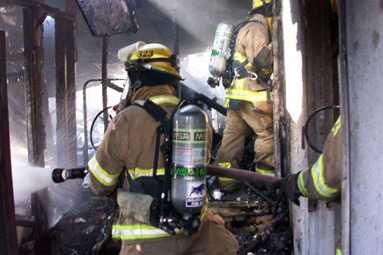

 Every time I open the newspaper, I see public safety workers being painted as greedy. Are Arizona firefighters and police officers getting rich?
Absolutely not.The average yearly salary for an Arizona fire fighter is $39,000, according to careerbuilder.com. With starting pay in rural areas around $20,000 a year, no one gets into this profession for money, especially considering the job’s physical demands. Last year in Arizona, nearly 9,000 retirees received a PSPRS pension. The average payout? About $44,000.
What about the DROP program I’ve heard so much about? Is that a sweetheart deal?
No. DROP is a positive program for employees, employers and taxpayers. It delays the retirement of municipalities’ most experienced fire fighters and allows advance planning for personnel needs. DROP provides savings to taxpayers by reducing lifetime pension payments in return for a single, lump-sum payment taken from the employee’s own retirement account. This means the employee receives smaller monthly payments for life. DROP creates additional savings by halting employer pension contributions for each employee in the plan.
When I retire, I get Social Security. What about fire fighters? Doesn’t that federal program help them?
Most Arizona fire fighters do not receive Social Security benefits. Instead, the 7.65 percent tax typically paid by employers is directed toward fire fighter pension plans as a contribution. Pension critics rarely mention this fact, skewing their statistics.
The fire fighters I know all seem to retire young. Can’t they just go get new jobs meanwhile collecting their pensions?
The job’s physical demands require fire fighters to retire at a comparatively young age. Ideally, fire fighters join the force in their early 20s, retiring after an average of 23 years, in their mid 40s. Age-appropriate retirement is effective and efficient for taxpayers. It lets cities staff fire departments with younger, healthier, cheaper fire fighters. At the same time, because these jobs are so physically demanding, mid-life career changes are often difficult for former fire fighters. Additionally, the average fire fighter has a life expectancy 7 to 12 years shorter than you and I.
But isn’t the PSPRS system broke? And isn’t it bankrupting the state of Arizona?
While PSPRS may be underfunded today, this shortfall should not be blamed on fire fighters, but on Wall Street and the financial sector’s criminal behavior. Not one fire fighter ever has invested a dime of the fund’s assets. Instead, they’ve relied on investment experts hired by the State of Arizona. Blaming fire fighters for Wall Street’s crimes is like blaming the victims of a fire for the actions of an arsonist.
Equally important is the fact that today represents a snapshot in time for PSPRS. Ten years ago, the fund was funded at the 134 percent level (and no one sought to return fire fighters’ “excess” contributions). Given time, the market will reach equilibrium, making the fund whole again.